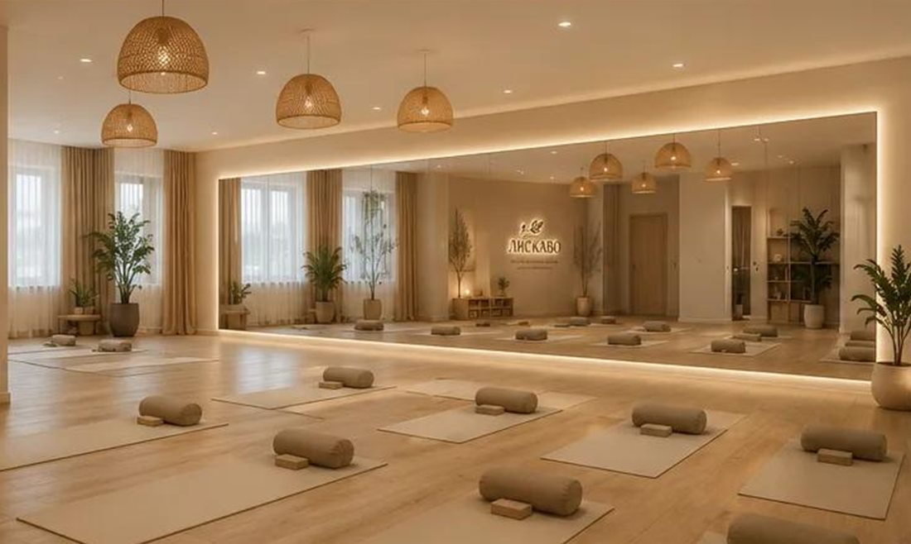

01 · вторник
Женское здоровье
Не только мышцы тазового дна. Важно, как работает всё тело.
Работа с этой областью не сводится к тому, чтобы постоянно напрягать определённые мышцы. Мы учимся чувствовать тело, координировать движения, замечать дыхание и понимать разницу между напряжением и расслаблением.
- Дыхание. Замечаем, как оно сопровождает движение, и не задерживаем его без необходимости.
- Подвижность. Упражнения для разных отделов тела в комфортном диапазоне.
- Осанка и координация. Лучше управляем движением и ощущаем положение тела.
- Тазовое дно. Учимся осознанно включать мышцы в работу и, не менее важно, отпускать напряжение.
- Телесная осознанность. Выбираем подходящую нагрузку и не выполняем движения через боль.
Если есть боль, недержание, ощущение тяжести или другие симптомы со стороны тазового дна, важно обратиться к профильному специалисту. Групповые занятия не заменяют диагностику и индивидуальную реабилитацию.